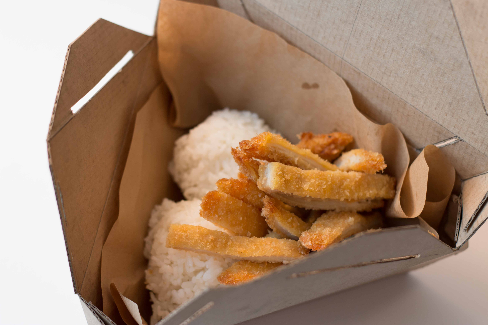
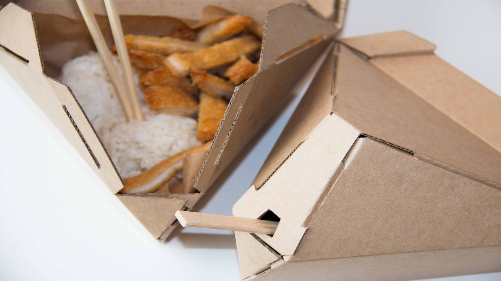
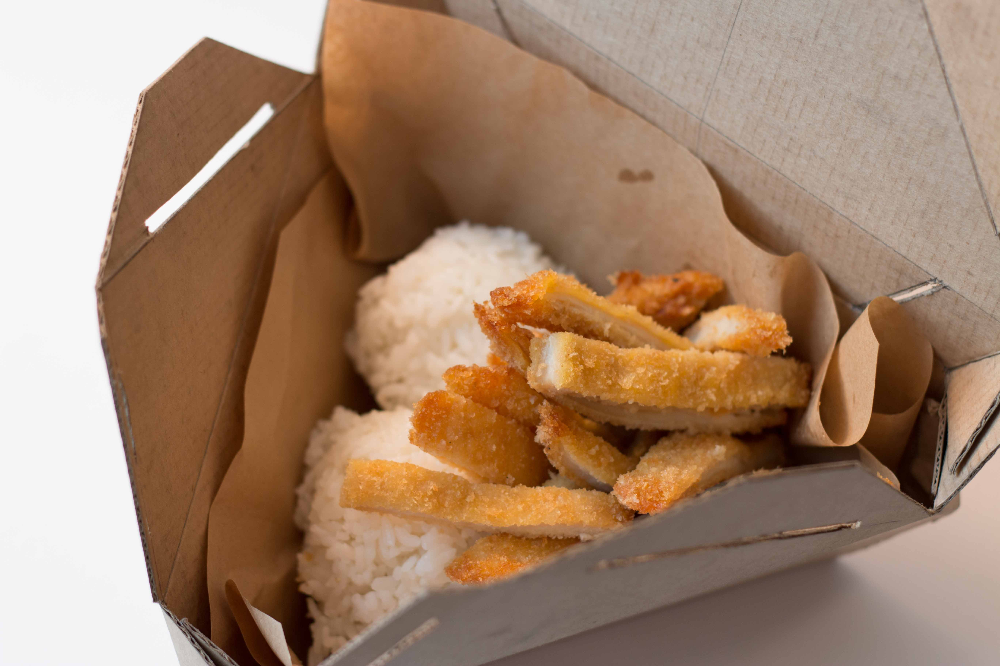
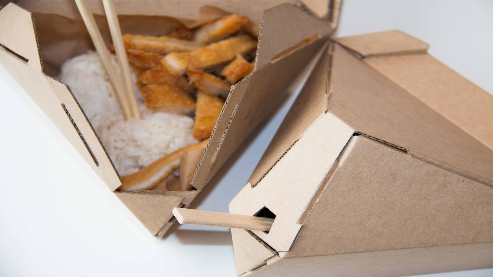

—
take-out box
The aim of this project was to design a take-out box for food.
As a class project, the design had many restrictions:
The many prototypes I made, ranged from exploring origami folds and different tabs. The process of iterating new designs and versions, incrementally made my design better. Here are some images that show the process:
Origami folds and designs were too difficult with the E-flute cardboard. The designs finalized and iterated further had simpler folds and no curves where the cardboard would crack.
For joining sides and different pieces I used tabs and supports from here.
My final design includes tabs and was made from one piece of cardboard. It has a triangular shape and a flat back for a strong structure and easy holding. These shapes add stability, strength and grip to the box. Images of
the final design:
 


